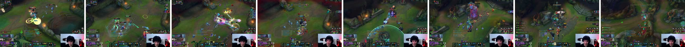
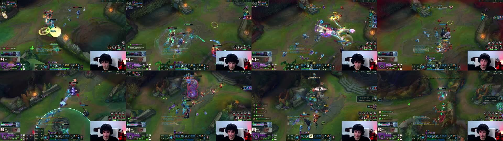
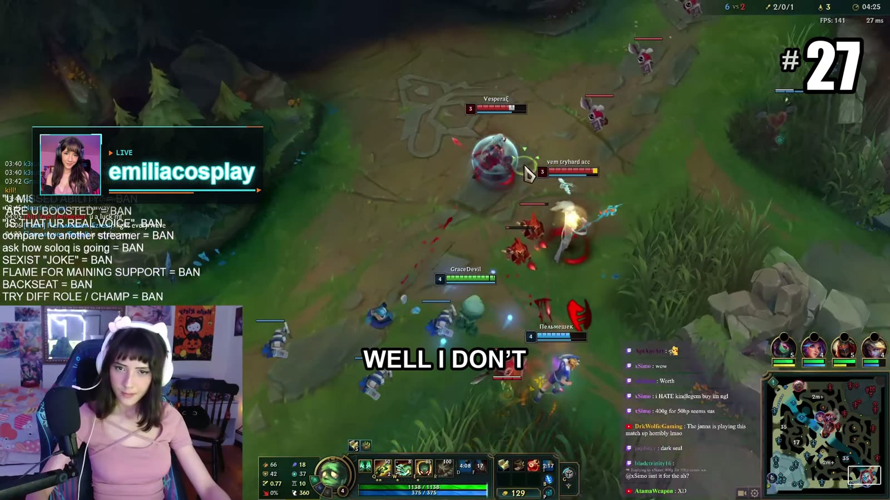
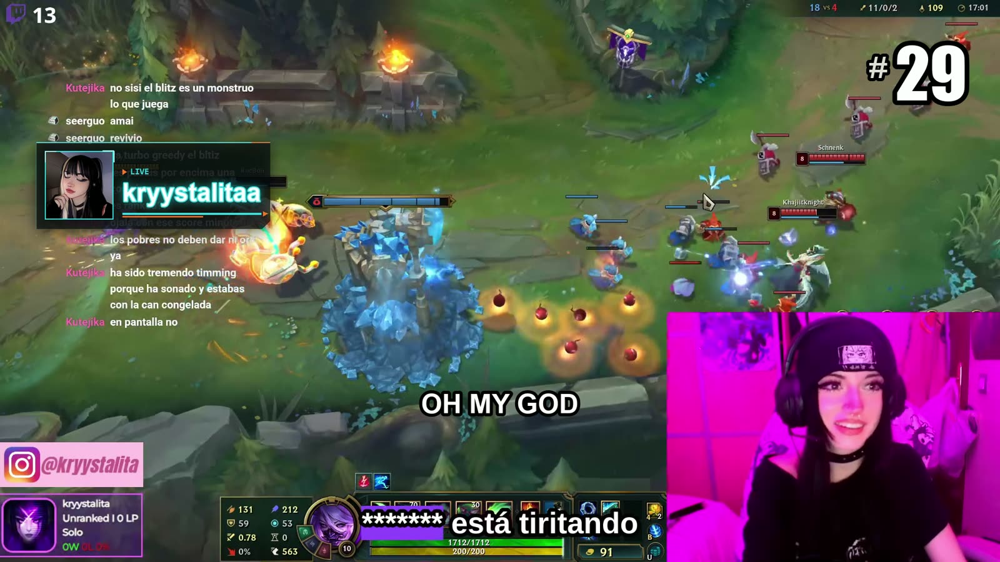
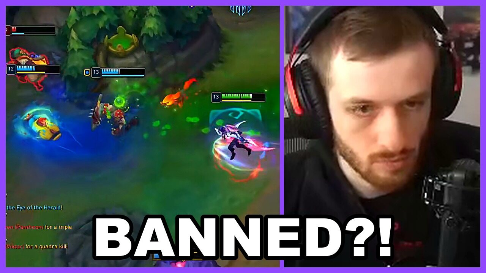
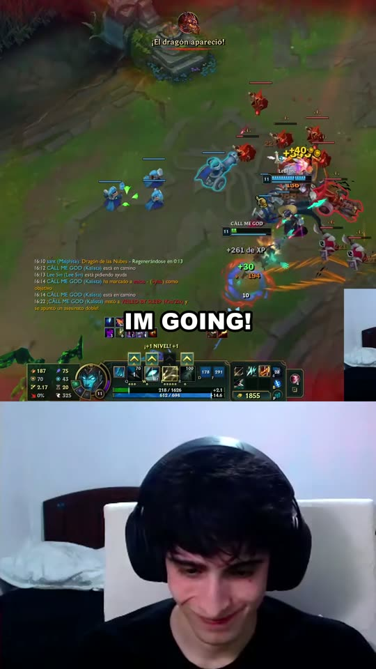
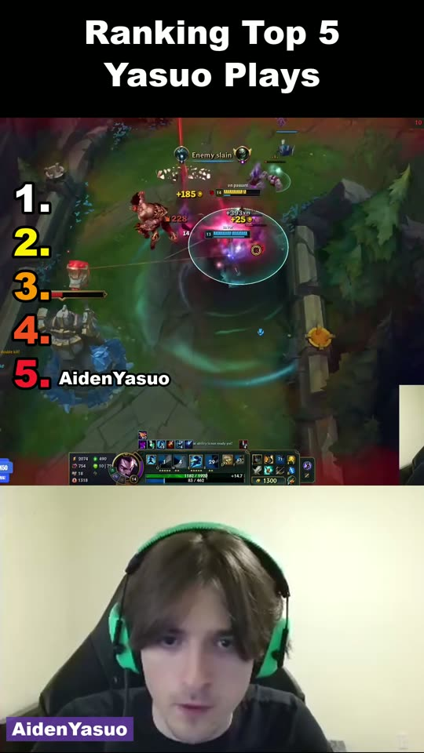

Runs every night at 03:00, unattended
222 clips in, 29 out.
A home PC watches the day's most-watched League of Legends clips on Twitch, keeps the best, and publishes a finished countdown video of about ten minutes and three Shorts to YouTube before breakfast. Once a week it adds a themed compilation.
Where 193 clips were dropped
Each square is one of the night's 222 eligible clips. The 120 with pictures were downloaded in full quality and looked at by models. Step through the filters, then select a picture to see what each one decided.
Cheap filters first, expensive ones last
Each stage is run by one of three kinds of worker. The free ones go first and discard most clips, so the ones with a daily allowance only see the survivors.
-
Plain code
Python, ffmpeg and signal processing. Free, fast and predictable. Finds repeated moments, measures motion, applies rules, renders video.
-
Model on the home GPU
A 4-billion-parameter vision model (Qwen3-VL via Ollama) and Whisper for speech. Free, but slow on an 8 GB card.
-
Model in the cloud
Claude, through a Claude Code subscription, looks at frames of every gameplay clip and picks which ones Gemini watches. Google Gemini watches those whole, with sound, on its free tier with a strict daily allowance.
One night, stage by stage
Times are from the log of the 18 October run. It finished at 04:51 with exit code 0.
-
Plain code
Check the machine, read the comments
A quick self-check confirms ffmpeg, the GPU, Ollama and the API keys, so a broken setup fails in seconds instead of an hour in. Gemini then reads comments on recent uploads. A viewer writing “#3 was boring” is mapped to the third clip of that video, and only complaints several viewers agree on become proposals for the owner.
-
Plain code
Fetch the day's top clips
The Twitch API lists the most-watched League of Legends clips created between midnight and midnight, Amsterdam time: title, streamer, language tag, view count and where in the stream it was clipped. Channels in Japanese and Chinese are skipped, except a short allow-list of streamers whose clips proved good, and so is a hand-kept blacklist. The list is read until 222 clips qualify; that night it took 947. Nothing is downloaded yet.
-
9 minPlain code
Drop what code alone can judge
Viewers often clip the same play several times. Two clips from the same stream less than 90 seconds apart are one moment, and only the shortest of the well-viewed ones stays; a moment already published in the last two weeks is skipped. That removed 11. The other 211 are downloaded in low quality and checked for motion; tournament titles go too.

Motion compares eight tiny frames like these (160×90 pixels): a clip that barely changes is a menu or a paused screen. This is the clip that became #2. The 199 that move are ranked by signals that cost nothing: how many viewers clipped the same moment, whether the streamer clipped it themselves, views, and a title like
penta
or1v5
. The top 120 go on. Loudness used to count here; it doesn't any more, because the owner's reviews found it wrong both ways: a silent outplay was one of the best clips of its night. -
31 minModel on the home GPU
Ask a small vision model one question
The 120 are downloaded in full quality. A 4B vision model on the home GPU looks at three frames of each and answers one question:
is this League of Legends gameplay?
Majority vote. 91 were.This model used to judge kills, loudness and pro broadcasts too. Measured against the owner's reviews, only the gameplay answer was reliable (8 of 8), so the rest was handed to the larger models that watch with sound.
-
7 minModel in the cloud
Let Claude pick what Gemini watches
Gemini's free allowance covers about 50 clips a night, so which 50 matters. Claude sees an eight-frame contact sheet of every gameplay clip plus its title, and scores how likely it is a highlight. It runs through
claude -pon a Claude Code subscription, five clips per call, about four seconds a clip. It can only reorder the queue, never drop a clip; if it fails, the free signals order stands.
What Claude saw of clip #2. Its score: 9/10, “Double, quadra, then pentakill banner in big teamfight”. -
25 minModel in the cloud
Let a large model watch the whole clip
The top 50 go to Gemini as video with sound. It answers in a fixed JSON shape: scores, a description, a few plain facts, and where the action starts and ends. Its real verdict on clip #2:
{ "clip_focus": "gameplay", "play_quality": 9, "entertainment": 9, "what_happens": "The streamer plays Kalista in a chaotic mid-lane teamfight, positioning well and stacking spears. He secures a Pentakill on the enemy team while pushing towards their…", "is_league_game": true, "pro_broadcast": false, "streamer_playing": true, "action_start_s": 1.0, "action_end_s": 35.0 }Code makes the call. A clip that isn't League, isn't the streamer playing, or is a pro broadcast is dropped whatever it scored. The rest is kept on 6+ entertainment (7+ for pure reactions) or 7+ play quality. The free tier allows 20 requests per model per day, so the stage walks a chain of models, each with its own allowance. It moved along the chain two times that night. The keepers fill a countdown toward eight minutes, never past eleven: 29 clips, 10.8 minutes that night.
-
4 minModel on the home GPU
Transcribe and translate the streamers
Whisper detects each clip's language and translates the speech into English, with a timestamp on every word. Those timestamps drive the captions.
-
8 minPlain code
Assemble the video
ffmpeg renders every clip with an animated name card, the countdown number and English captions, then an outro. Each clip is first cut to the action window Gemini reported, so a play that ends at 18 seconds doesn't carry 30 seconds of walking back. There is no intro: the video opens on the first clip. Clips are joined by short cuts that glitch, whip-pan or pixelate across the boundary, picked at random with the same kind never twice in a row.
Everything renders at 60 frames per second, Twitch's own rate, and the finished video is upscaled once to 1440p before upload: YouTube compresses 1080p uploads far harder than 1440p ones. The GPU's video encoder is detected and used automatically.

Captions show one to three words at a time and never overlap, so the video works with the sound off. Many streamers already burn live captions into their stream, and those can't be removed. The pipeline finds them without a model: a caption widget only draws while someone speaks, so it compares the bottom of the frame during speech with the same area during silence. Whatever appears only during speech is a caption.

An English source caption means we add nothing. A caption in another language, like this Spanish one, gets the English translation above it. -
Plain code
Write the credits, draw the thumbnail
The description gets a chapter for every clip and a link to every streamer's channel. Gemini writes the title's hook and one to three words for the thumbnail. The thumbnail itself is composed in Python: a frame from the action, zoomed toward the fight, with the streamer's webcam as a framed picture-in-picture and the original webcam blurred out. The local vision model vets candidate frames first, so it is never a scoreboard.

-
17 minPlain code
Upload
A resumable upload through the YouTube Data API. The video id is recorded, so if the run crashes and restarts it can't upload the same day twice.
-
8 minModel on the home GPU
Cut three Shorts
The best clips are cut to about 30 seconds and turned vertical. The local vision model finds where the streamer is, a webcam or a VTuber avatar, and the box is snapped to the overlay's edges. Gameplay goes on top and the streamer below; a duo stream gets both webcams side by side, and when nobody is found the gameplay is centred and zoomed in slightly. Gemini tells who says each caption line, so every speaker gets their own colour. If the streamer already burns English captions into their stream, the Short adds none of its own.
One of the three is a ranking Short instead: a top 5 of one theme, such as pentakills or one champion, picked from every clip the channel has ever published and never reused. Shorts are uploaded at 1440×2560 for the same reason as the long video.


-
Plain code
Clean up
Every published clip is first written to a permanent log with its Twitch link, scores and transcript. Once a week that log becomes a themed compilation, such as
Top 10 Pentakills of the Week
or one champion's best plays: the theme that ran longest ago among those with at least eight strong clips. Then raw downloads older than a day are deleted. A finished video is only deleted after YouTube has confirmed it.
Three decisions that shaped it
Cheap first, expensive last
Free code and a home GPU cut the list from 947 to 91 before any cloud model runs. Sending all 947 to Gemini would take 48 days of one model's free allowance.
Models describe, code decides
What a model saw is cached; whether that's good enough is a function anyone can read and test. When a clip is wrongly rejected, the reason is a line of code.
Degrade, never stop
No key: judge locally. Quota gone: next model. Claude unavailable: keep the free order. No billing: draw the thumbnail locally. No GPU: use the CPU. Tests cover each fallback with no network, GPU or keys.
Open problems
Measured on real nights.
The cut before the judge is the weak spot
Only about 50 of 90 gameplay clips can be watched with sound each night. On clips Gemini did watch, Claude's frame-based ranking found keepers about as well as the free signals: 56% of its 6+ scores were kept, 28% of the rest. Its value should be the clips below the cut, which can't be measured without watching them.
The webcam finder still slips
A small vision model replaced the face detector and finds webcams and avatars the old one missed, but it can still frame a sticker or crop a webcam too tightly. A miss falls back to zoomed gameplay, so the Short still works.
Gemini's descriptions are only partly right
In the owner's reviews, 8 of 20 descriptions got a place or champion wrong. Its scores and facts hold up better, which is why code decides on those and the description is only a hint.